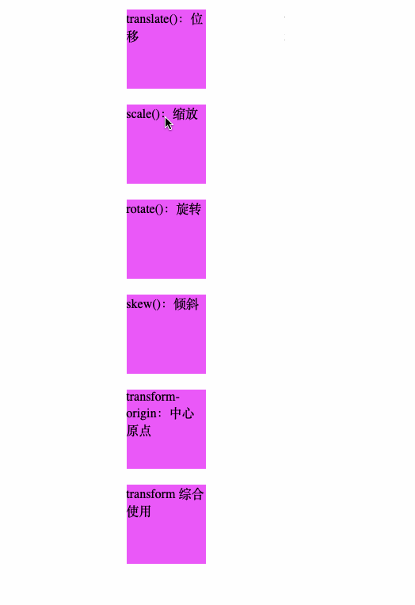

概念：
2D 动画要是使用 transform 属性来实现文字或图像的的各种变形效果，如位移、缩放、旋转、倾斜等
transform属性变形方法：
translate()：位移
将元素沿着水平方向（X轴）和垂直方向（Y轴）移动
translateX(x)：元素仅在水平方向移动（X轴移动）
translateY(y)：元素仅在垂直方向移动（Y轴移动）
transklate(x,y)：元素在水平方向和垂直方向同时移动（X轴和Y轴同时移动）
scale()：缩放
将元素根据中心原点进行缩放。跟translate()方法一样
scaleX(x)：元素仅水平方向缩放（X轴缩放）
scaleY(y)：元素仅垂直方向缩放（Y轴缩放）
scale(x,y)：元素水平方向和垂直方向同时缩放（X轴和Y轴同时缩放）
rotate()：旋转
来将元素相对中心原点进行旋转。这里的旋转是二维的，不涉及三维空间的操作
例如：transform:rotate(30deg);顺时针旋转30度
skew()：倾斜
和translate()方法、scale()使用方法相同
skewX(x)：使元素在水平方向倾斜（X轴倾斜）
skewY(y)：使元素在垂直方向倾斜（Y轴倾斜）
skew(x,y)：使元素在水平方向和垂直方向同时倾斜（X轴和Y轴同时倾斜）
transform-origin：中心原点
transform-origin属性取值有2种：一种是采用长度值，另外一种是使用关键字。长度值一般使用百分比作为单位，很少使用px、em等作为单位
例如：transform-origin:right center;和transform-origin:100% 50%; 均是将原地设置在 右边中间位置
transform 综合使用
例如：transform:rotate(30deg) translateX(100px) transform-origin:right center;
示例
1 <!DOCTYPE html>
2 <html lang="en">
3 <head>
4 <meta charset="UTF-8">
5 <meta name="viewport" content="width=device-width, initial-scale=1.0">
6 <meta http-equiv="X-UA-Compatible" content="ie=edge">
7 <title>Document</title>
8 <style type="text/css">
9 * {margin: 0; padding: 0}
10 div {width: 100px; height: 100px; background: #f0f; margin: 20px auto;}
11 div:nth-child(1):hover {transform:translateX(200px);}
12 div:nth-child(2):hover {transform:scale(2, 2);}
13 div:nth-child(3):hover {transform:rotate(30deg);}
14 div:nth-child(4):hover {transform:skew(30deg, 30deg);}
15 div:nth-child(5):hover {transform-origin:left center; transform:rotate(-30deg);}
16 div:nth-child(6):hover {transform:translateX(200px) scale(2, 2) skew(30deg, 30deg)}
17 </style>
18 </head>
19 <body>
20 <div>translate()：位移</div>
21 <div>scale()：缩放</div>
22 <div>rotate()：旋转</div>
23 <div>skew()：倾斜</div>
24 <div>transform-origin：中心原点</div>
25 <div>transform 综合使用</div>
26 </div>
27 </body>
28 </html>结果
